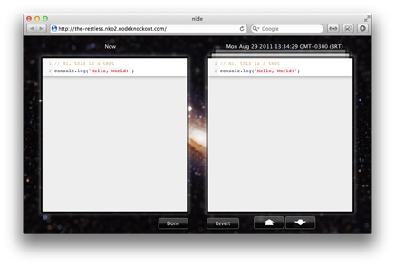

nide is a web-based IDE for Node.js, designed with simplicity and ease-of-use in mind.
The current version of nide was designed and developed in only 48 hours, at the Node.js KO coding competition.
An online installation of nide is available here for demonstration purposes. Note: Depending on the server load it might not respond. If so, try again later or try doing a local install. (Nide was not designed to handle hundreds of simultaneous users.)
You can install nide locally by using the following command (requires Node.js and NPM):
sudo npm install -g nide
After that, you can create a new project steping into an empty folder and typing:
nide init
Nide will create the project and listen on port 8123. Fire your web browser to http://localhost:8123 and you're set.
If you like this project, please consider voting for it on Node.js Knockout.
Just click this button → Thank you.
Spread the word about Nide on Facebook, Twitter or Google+:
You can access your project from any environment: Local, intranet or Internet.
The project tree shows all the files and folders in your current project, for instant navigation.
Nide integrates tightly with NPM, so you can install and uninstall packages without ever leaving the IDE.
Nide can also instruct NPM to automatically update your package.json file with
the new dependencies.
Nide sports a built-in documentation browser that automatically figures which node version you're using and fetches the right documentation for you.
Nide integrates with CodeMirror to provide a desktop-class editing experience, without annoyances or distractions.
The contents of the current file are automatically synchronized with the backend, as you type.
With just one click you can get access to the full editing history. Mac-style. Roar.
Nide is distributed under the MIT license.
If you like this project, please consider voting for it.
To do so, just click this button →
Thanks in advance.
You can also spread the word about Nide on Facebook, Twitter or Google+: